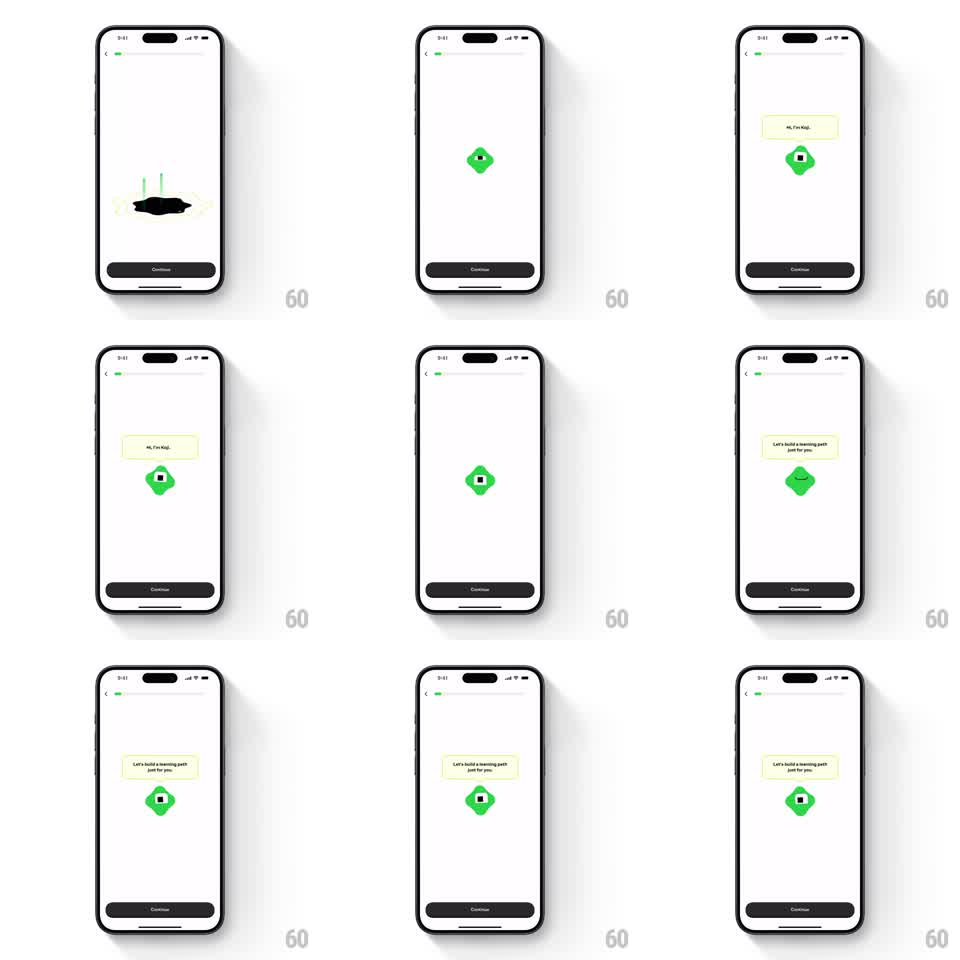

Media
Frame-by-frame

Rebuild this animation 1:1: Brilliant's Koji intro - the mascot materializes from a glowing blob and introduces itself through springy speech-bubble tooltips that swap in sequence.

Rebuild this animation 1:1: Brilliant's Koji intro - the mascot materializes from a glowing blob and introduces itself through springy speech-bubble tooltips that swap in sequence.
## Integration
Integration: stack-agnostic spec - springs given as stiffness/damping, timed motions as duration + curve; map every value to your framework and animation library of choice.
## Scene
Minimal onboarding screen with a progress bar: a green blob that resolves into the cube mascot with a face, cream speech-bubble tooltips above it ("Hi, I'm Koji." then "Let's build a learning path just for you."), and a dark Continue button.
## Motion spec
Pattern: morphing reveal with tooltip swap, ~2.5s.
- A soft green blob with glowing edges settles at center (400ms, ease-out), then morphs - corners tightening into the cube, the face fading in (500ms, ease-in-out).
- The first tooltip pops in above the mascot (spring stiffness 420 damping 15, slight overshoot), anchored with its little tail pointing down at the cube.
- The mascot idles with a small bob (+-4px, 2.5s) while the tooltip holds.
- The first tooltip scales away (150ms, ease-in) and the second, larger tooltip pops in on the same spring, the mascot doing a small attentive tilt (+-4deg) as it swaps.
- Continue is static below.
## Calibration
- The morph is continuous - the blob never cuts to the cube.
- Tooltip tails track the mascot's bob so the anchor never detaches.
## Reduced motion
Mascot and final tooltip fade in.
## Don't miss
- The tooltip is cream with rounded corners and a visible tail - not a plain label.
- The mascot's face (eyes, small mouth) arrives with the morph, not after it.